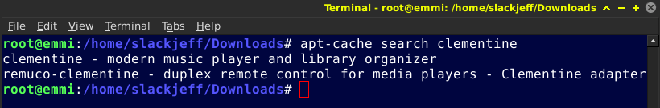
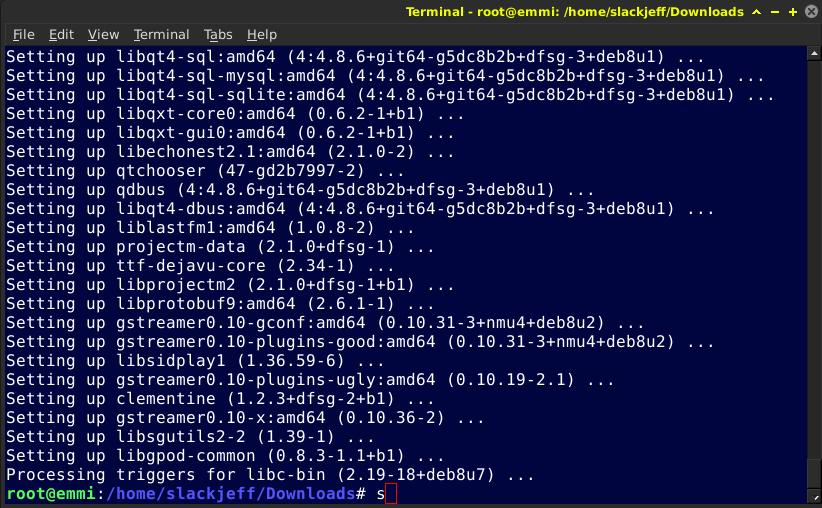
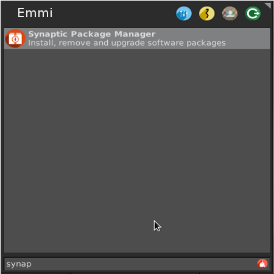
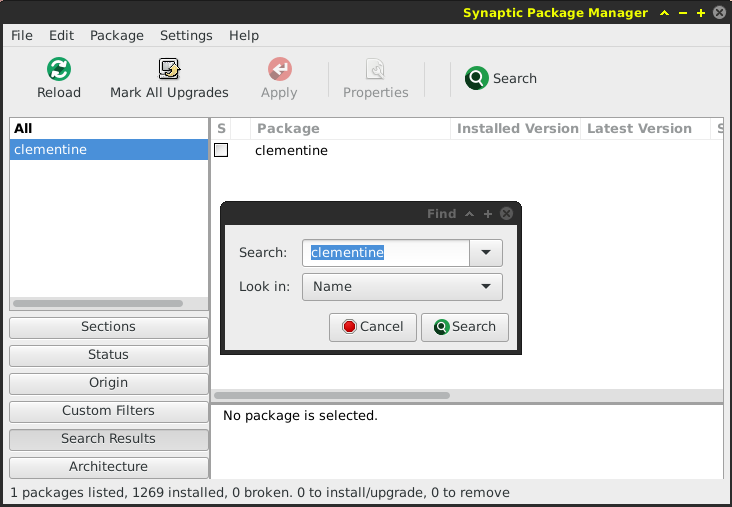
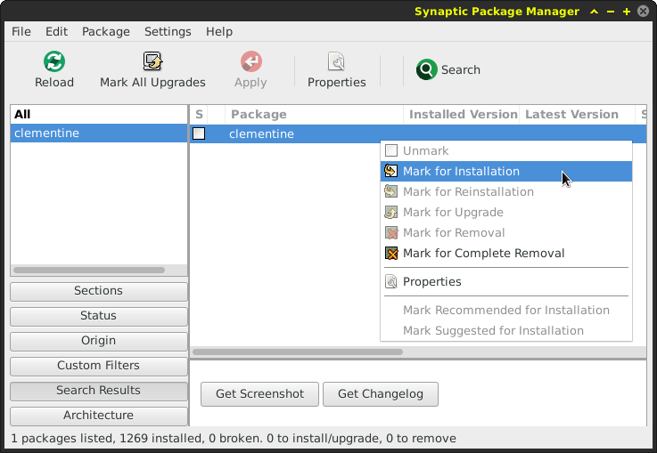
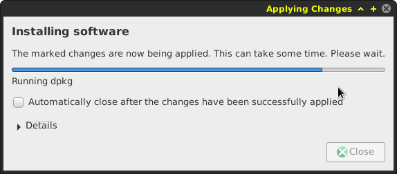

Instalação de Programas
Instalação via Terminal
Para instalar algum pacote na Emmi é muito fácil!
Vamos primeiramente abrir o terminal e pesquisar se o pacote que você deseja tem no repositório oficial.
Abrimos o terminal e logamos como root, feito isso vamos rodar o comando apt-cache search NOMEdoPACOTE, em nosso caso vamos procurar o Clementine.
# apt-cache search clementine

Achamos o pacote, clementine é o pacote que procuramos.
Agora vamos rodar o comando apt-get install NOMEdoPACOTE para instalar:
# apt-get install clementine

Pacote instalado com sucesso!
Instalação via Synaptic
Podemos também realizar instalações de pacotes via Synaptic, que é o gerenciador de pacotes em modo gráfico.
Para iniciar, abrimos o Menu e digitamos Synaptic

Feito isso será feita uma autenticação, digite a sua senha de root.
Pronto, o Synaptic está aberto.
Vamos agora clicar no menu Search que está localizado na parte superior e digitamos o pacote que desejamos encontrar, em nosso caso será o Clementine

Encontramos, agora vamos clicar com o botão direito do mouse em cima do pacote desejado e selecionar a opção Mark for Installation.

Agora clicamos em Apply, que está localizado no menu superior e aguardamos a instalação.
